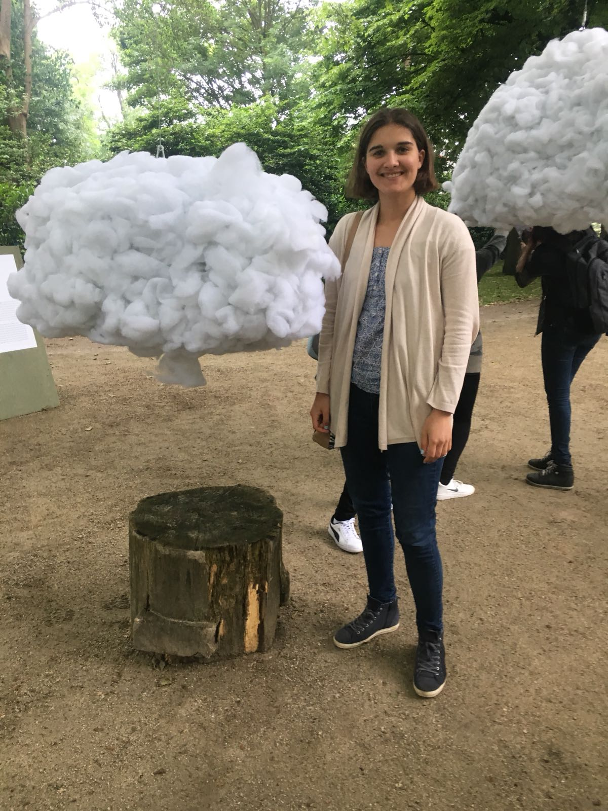

Het meeste interessante project was ‘Head in the Clouds’, gemaakt door Mickaël Martins Afonso. Het project gaat erover dat de steden een overvloed is voor de mensen. Er worden zintuigen overprikkeld door de omgeving. Er zijn geen plekken in de steden waar mensen tot rust kunnen komen. Het project staat voor rust en jezelf terug vinden. De wolken zijn ervoor dat mensen even een moment rust hebben om na te denken. Het moet mensen gaan inspireren om te nadenken over het idee van het project.
Het project bestaat alleen uit wolken die hangen. De wolken zijn hol van binnen waardoor mensen binnen in de wolken kunnen kijken. De witte wolken hangen aan een touw die aan een boom is bevestigd. Verder zijn er geen sensors of andere materiaal gebruikt voor het project. Het werkt als volgt: mensen moeten in de wolk gaan kijken en rust vinden. Zo werkt het concept ervan.
Dit project spreekt mij er veel aan omdat ik met hetzelfde probleem zit. Ik probeer naast mijn drukke leven ook rust momenten te maken. Ik hou niet van drukke plekken en probeer die te vermeiden. Het probleem is alleen dat ik niet veel rustige plekken kan vinden. Ik kan niet vaak een rust moment pakken en even nadenken. Dat ga ik in de toekomst wel meer doen zodat ik minder vaak zenuwachtig wordt.
Ik heb het project uitgestrest tijdens de expo en ik merkte dat ik inderdaad tot rust kwam. Ik had alleen maar een wolk om me heen en kon even niks anders zien. Ik keek alleen naar het witte en dacht niet verder na. Die paar seconde heb ik goed nagedacht en ben ik tot rust gekomen. Voor de expo was ik gestress en op dat moment kwam ik even tot rust. Ik kon erna alleen maar nog lachen en was ik rustig.

Na de expositie heb ik verder onderzoek gedaan naar het project en naar de maker. Op de website https://www.freundevonfreunden.com/journal/mickael-martins-afonso-and-caroline-escaffre-faure-softly-challenge-the-urban-status-quo-through-design/ staat een stukje beschreven over Mickaël Martins Afonso. Hij had het project samen gemaakt met Caroline Escaffre- Faure. Het project is tijdens festivals in Frankrijk tentoongesteld. Ze hebben tijdens het festival het project laten zien. Het werd omschreven dat het er absurd uitzag. Het idee van het project werd aan de mensen verteld. Mensen moesten gaan nadenken om uit het opgesloten gevoel te gaan. Ze moesten een gevoel van opluchting krijgen, om even bij zichzelf te komen. Er zijn nog meer projecten door de duo gemaakt samen.
De expo was erg interessant. Ik heb eerst rond gekeken en elk project bekeken. Het eerste project ‘Head in the Clouds’ sprak mij gelijk aan. Ik kon mezelf er snel mee vergelijken daarom sprak het mij het meeste aan. Verder waren de andere projecten ook er leerzaam en kan ik de ideeën toepassen in de lapweken. Het was een grote inspiratie om te zien hoeveel verschillende technologie er bestond. Ik heb een nieuwe kan van robotica ontdekt. Ik heb achteraf geluisterd naar de sprekers, ze vertelde per persoon waar het festival voor bedoelt is. De ideeën achter alles werd verteld, het was erg leuk om naar te luisteren.